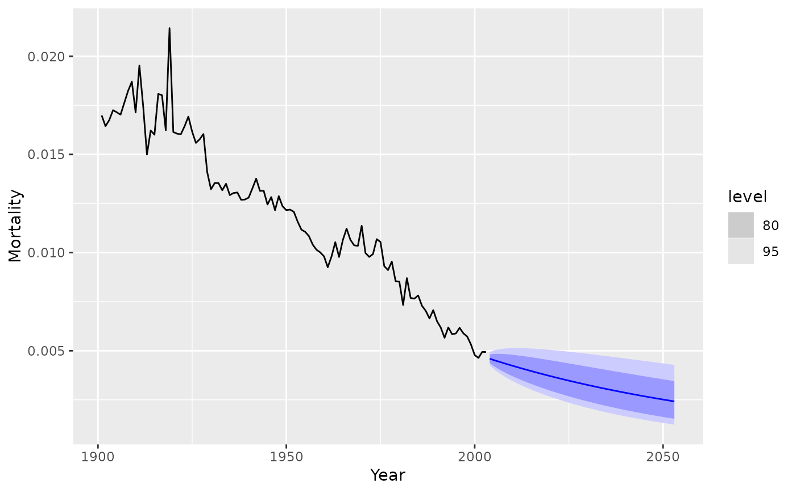
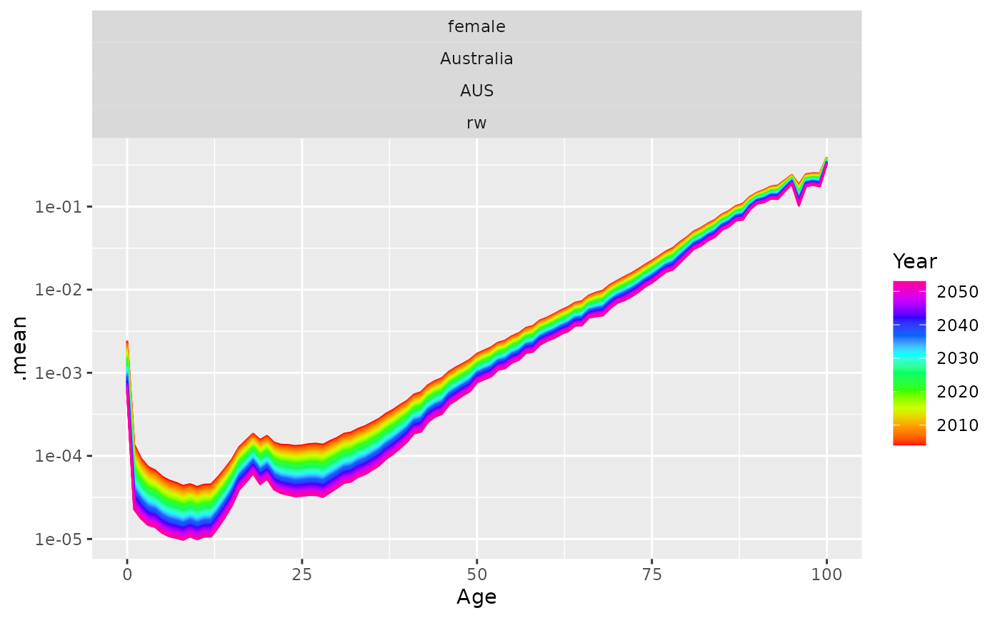

The kt coefficients are forecast using a random walk with drift. The forecast coefficients are then multiplied by bx to obtain a forecast demographic rate curve.
Arguments
- object
Output from
lee_carter.- h
Number of years ahead to forecast.
- se
Method used for computation of standard error. Possibilities: “innovdrift” (innovations and drift) and “innovonly” (innovations only).
- jumpchoice
Method used for computation of jumpchoice. Possibilities: “actual” (use actual rates from final year) and “fit” (use fitted rates). The original Lee-Carter method used 'fit' (the default), but Lee and Miller (2001) and most other authors prefer 'actual' (the default).
- level
Confidence level for prediction intervals.
- ...
Other arguments.
Value
Object of class fm_forecast with the following components:
- age
Ages from
object.- year
Years from
object.- rate
List of matrices containing forecasts, lower bound and upper bound of prediction intervals. Point forecast matrix takes the same name as the series that has been forecast.
- fitted
Matrix of one-step forecasts for historical data
Other components included are
- e0
Forecasts of life expectancies (including lower and upper bounds)
- kt.f
Forecasts of coefficients from the model.
- type
Data type.
- model
Details about the fitted model
References
Lee, R D, and Carter, L R (1992) Modeling and forecasting US mortality. Journal of the American Statistical Association, 87, 659-671.
Lee R D, and Miller T (2001). Evaluating the performance of the Lee-Carter method for forecasting mortality. Demography, 38(4), 537–549.
Examples
library(dplyr)
#>
#> Attaching package: ‘dplyr’
#> The following objects are masked from ‘package:stats’:
#>
#> filter, lag
#> The following objects are masked from ‘package:base’:
#>
#> intersect, setdiff, setequal, union
library(ggplot2)
ausf_lca <- aus_mortality |>
filter(Sex == "female", State == "Australia") |>
lee_carter()
ausf_fcast <- forecast(ausf_lca, 50)
ausf_fcast |>
filter(Age == 60) |>
autoplot(aus_mortality)

rainbow_plot(ausf_fcast, .mean) +
scale_y_log10()
